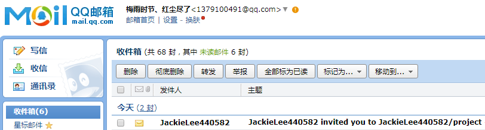

Git入门
-
一．准备工具
-
1.github官网上注册账号https://github.com/
注释：GitHub是英文网站，(对于英语不太好的学员建议可用chrome浏览器右键翻译工具翻译看,但推荐看英文的) -
2. 安装github客户端(git免安装包)[点击可下载]

*注册和安装完后，github和git都登陆同一账号。
-
1.github官网上注册账号https://github.com/
-
二.概念理解
-
1.git 和 github之间是什么关系 ？
Git - 版本控制工具
Github - 一个网站，提供给用户空间创建git仓储
-
2.Git工作区,暂存区和版本区 以及 远程仓库，基本概念：
①工作区:
你工作的地方,你在哪里工作呢?肯定是你的电脑上,那么工作区就是你在电脑里能看到的目录.
②暂存区:
英文名叫stage或者index.听名字就知道是暂时的,不是永久的,数据会经常的发生变化,这个区域一般存放在’git目录’下的index文件(.git/index)中,我们把暂存区有时候也叫做索引(index).
③版本库:
工作区中有一个隐藏目录.git,这个不算工作区,而是Git的版本库.
【（组织--》文件夹和搜索选项--》查看--》显示隐藏文件）】
④远程仓库：
Github - 一个网站，充当服务器仓库，提供给用户空间创建git仓储。
-
1.git 和 github之间是什么关系 ？
-
三．命令行操作
-
1.之前已打开登陆git客户端：打开shell小黑窗
①点击设置图标选中Options登陆账号
②右键点击Tutorial，点击Open in Git Shell选项，显示shell小黑窗
-
2.在github网站上创建项目存储仓库：
-
3.$cd C:\Users\xdl\Desktop
以此等下拿github网站项目仓库时项目在桌面上
-
4.复制github网站项目仓库地址,然后git clone xxx复制其仓库
$ git clone https://github.com/JackieLee440582/project.git
$cd project -
5.查看git用户的账户名和邮箱：
$ git config --global user.name
$ git config --global user.email
如果查看不是当前账户和邮箱，可以进行设置：
$ git config --global user.name “JackieLee440582”
$ git config --global user.email “1422050441@qq.com”
-
6.查看状态
$ git status
$ dir 查看文件夹内容
-
7.提交文件：
（1）从工作区提交到缓存区：
①$ git add xxx (xxx具体某个文件)
②$ git add . (提交工作区所有文件)
（2）从缓存区提交到版本区：
①$ git commit (将弹出一个说明文档，写一下内容保存即可)
②$ git commit -m “wohahah” (不再弹出说明文档，直接提交)
（3）从工作区一键直接提交到版本区：
$ git commit -a -m “luckie”
（4）从版本区提交到远程仓库（服务器仓库）：
要关联一个远程库，使用命令:
$git remote add origin https://github.com/JackieLee440582/project.git
关联后，使用命令:
$ git push -u origin master第一次推送master分支的所有内容。
***由于远程库是空的，我们第一次推送master分支时，加上了-u参数，Git不但会把本地的master分支内容推送的远程新的master分支，还会把本地的master分支和远程的master分支关联起来，在以后的推送或者拉取时就可以简化命令。***
$ git remote 查看当前远程库
$ git remote -v 查看当前远程库的地址（即clone项目的地址）
注：
如果git push 报错，即是协议有问题，把HTTPS协议改成ssh协议：
$ git remote rm origin
$ git remote add origin git@github.com:JackieLee440582/project.git
$ git push origin master
-
8.工作区、缓存区、版本区中文件两两状态对比：
（1）工作区和缓冲区状态对比：
$ git diff
（2）缓存区和版本区状态对比：
$ git diff --cached
（3）工作区和版本区状态对比：
$ git diff master
-
9.文件或内容删除及回复操作：
（1）文件已提交到版本区，删除命令行：
$ git rm -f xxx (xxx为要删除的文件)
（2）文件误删或内容要找回，先：
$ git log || $ git reflog （Q键退出历史状态）
列出最近操作记录，复制最新一条记录的状态码（前几位就行）；
$ git checkout A B || $ git reset --hard A
回复到上一次操作，A为状态码，B为要找回的文件名
-
10.多人协作：分配权限
（1）打开你所要协作的项目，点击Settings，找到点击Collaborators
，输入你的组员账号，点击Add collaborators添加。
（2）组员在邮箱找到邀请函，点击View invitation接受邀请

（3）点击邀请后弹出github浏览页，登陆自己的github账号，将显示邀请详情，点击Accept inivitation接受邀请，那么可以协作项目了。
协助者一样命令行操作，首先cd 到desktop，然后git clone ...。 - 11.多人协作冲突问题：多人同时修改同一文件某一内容
-
1.之前已打开登陆git客户端：打开shell小黑窗